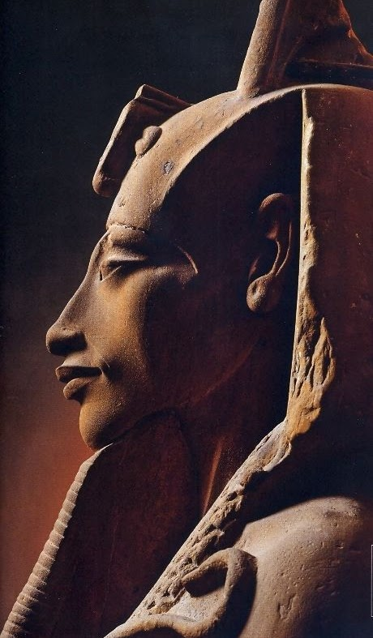

Єгипетська міфологія

Формування єгипетської міфології розпочалося у VI—IV тисячоліттях до нашої ери до виникнення класового суспільства. У кожній області (ном) склався свій пантеон і культ богів, втілених у небесних світилах, каменях, деревах, птахах, зміях і т. д. Єгипетські міфи мають вагоме значення і надають надзвичайний матеріал для порівняльного вивчення релігійних вірувань на Сході, дослідження ідеології греко-римського світу, а також історії виникнення і розвитку християнства.